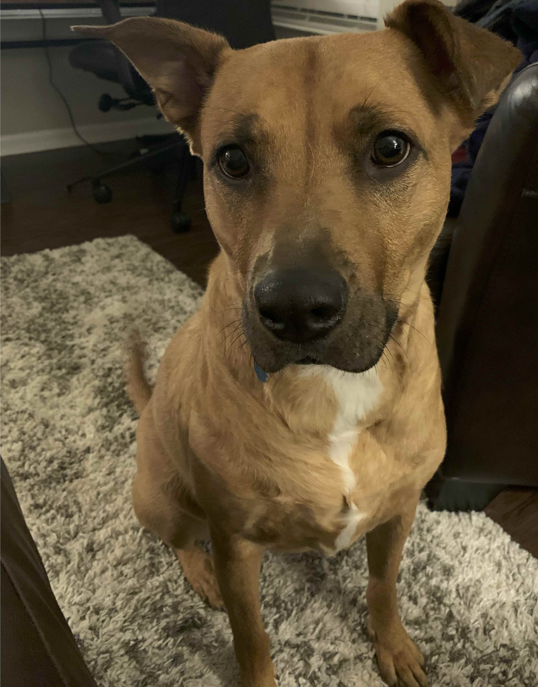

About
Hi, I’m Emma, the baker behind Bandi Bakery.
I started baking just for fun, mostly sharing extras with friends and family. I'd bring cookies to get-togethers or work, and before long people were asking when I was making more (especially my brown butter sea salt chocolate chip cookies).
Now I bake small batches of cozy favorites like cookies, focaccia, and other homemade treats. Everything is made from scratch with simpe ingredients and a lot of care.
Bandi Bakery is named after my dog, Bandi, who’s always nearby supervising. Don’t worry, she stays out of the kitchen when I’m baking. :)
Thanks so much for being here and supporting my little bakery. It means a lot!